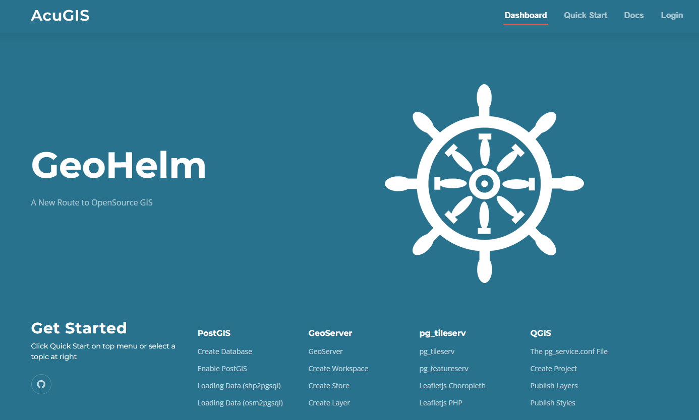

AcuGIS GeoHelm
Getting Started
Intro
Installation
Layout
Control Panel
Removing the Control Panel
PostGIS
Create Database
PostgreSQL
PostGIS
PgRouting
shp2pgsql
osm2pgsql
raster2pgsql
GeoServer
Access
Overview
Apache Tomcat
Create a Workspace
Create Store
Add Layer
Load ESRI Shapefile
Styles
pg_tileserv
pg_tileserv
pg_featureserv
Database Operations
Database Snapshots
Clone Database
Restore Database
QGIS
Introduction
pg_service.conf
Create a QGIS Project
Publish Layers
Publish Styles Only
LeafletJS
Leaflet Choropleth App
Leaflet GeoJson
Leaflet and PHP
Resources
Documentation
CSS
Security
Nagios
Project Support
Commercial Support
License
AcuGIS GeoHelm
»
AcuGIS GeoSuite
Edit on GitHub
AcuGIS GeoSuite
¶

Getting Started
Intro
Overview
Supported Operating Systems
Resource Requirements
Authors
Open Source
Installation
Check Hostname
Run the Installer
Enable SSL
Troubleshooting
Removing the Control Panel
Layout
Dashboard
Getting Started Page
Docs Page
Control Panel
Removing the Control Panel
PostGIS
Create Database
The geodb Database
Create a User
Create a Database
List Databases
Connect to Database
List Tables
Create Using the Control Panel
PostgreSQL
Repository Manager
File Locations
The pg_hba.conf File
The postgresql.conf File
Basic Commands
PostGIS
Installing PostGIS
Command Line
Extensions Tool
PgRouting
Installing PgRouting
Command Line
Extensions Tool
shp2pgsql
Shape Loader Tool
Load via Shape File Loader
Load via Comamnd Line
Tutorial: Load shp Files
Troubleshooting
Documentation
osm2pgsql
OSM Loader Tool
Load via OSM File Loader
Confirm Data Load
OSM Tool Options
Load via Comamnd Line
Troubleshooting
Documentation
raster2pgsql
Create Extension
raster2pgsql Loader
Load via raster2pgsql Loader
Load via Comamnd Line
Troubleshooting
Documentation
GeoServer
Access
URL
Admin Panel
Documentation
Overview
Version
Control Panel
Edit Config
Apps
Java
Location
Geoserver Extensions
Data Directory
CSRF Whitelist
Enable CORS
Apache Tomcat
Layout
Starting and Stopping
Service
Version
Tomcat Users
setenv.sh
Create a Workspace
Create Store
Credentials
Add Store
Add Layer
Add a Layer
Preview Layer
Customize Features
Load ESRI Shapefile
Preparing the Shapefile
Create Shapefile Store
Styles
Default Styles
Create a Style
Copy an Existing Style
Apply Style
pg_tileserv
pg_tileserv
About
pg_tileserv
Command Line
Access
Webmin
Database
Loading Data
Structure
Configuration File
Enable SSL
The postgisftw Database
Documentation
pg_featureserv
About
pg_featureserv
Command Line
Access
Webmin
Database
Loading Data
Structure
Configuration File
Enable SSL
The postgisftw Database
Documentation
Database Operations
Database Snapshots
Take Snapshot
Snapshot Location
Clone Database
Clone a Database
Naming
Restore Database
Restore
Snapshot Location
QGIS
Introduction
About
Install QGIS
pg_service.conf
Why Use It?
Create File on Server
Test File on Server
Create File on Desktop
Register File
Test File on Desktop
Create a QGIS Project
Create Project
Add PostGIS Layers
Style
Save
Publish Layers
Install GeoCat Bridge
Add Server
View Layers
Styles
Publish Styles Only
Summary
Publish Styles Only
Add Layers to QGIS
Create Styles
Publish Styles
Set Styles in GeoServer
Summary
LeafletJS
Leaflet Choropleth App
Intro
Choropleth Maps
featuresrv URL
Querying Features
Relative Values
Print
Using GeoServer
Documentation
Leaflet GeoJson
Access
pg_featurserv URL
Content
Documentation
Leaflet and PHP
Access
Initialize
Security
Structure
Content
Documentation
Resources
Documentation
CSS
Security
Nagios
Project Support
Contributing
Issues
Pull Requests
Commercial Support
License
Read the Docs
v: latest
Versions
latest
Downloads
pdf
html
epub
On Read the Docs
Project Home
Builds